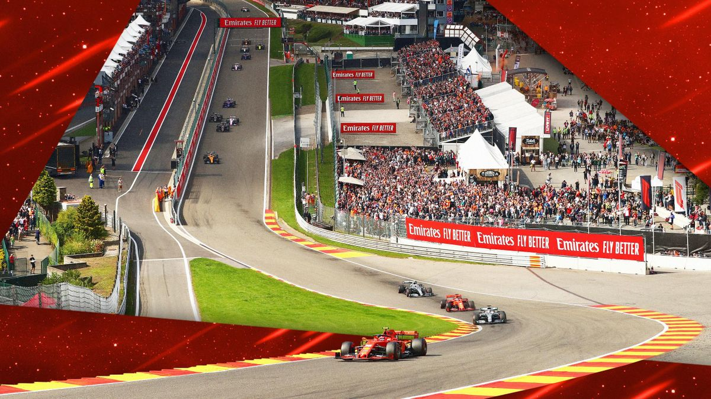

Pourquoi suivre la Formule 1 ?
La Formule 1 est l'apogée du sport automobile, combinant technologie avancée, pilotage de précision et un spectacle captivant. Découvrez les courses palpitantes et les moments inoubliables sur les circuits du monde entier.
Les Courses
Assistez aux courses les plus excitantes de la saison, du Grand Prix de Monaco à celui de Singapour. Les compétitions sont l'occasion de voir des courses à couper le souffle et des duels entre les meilleurs pilotes du monde.
Les Pilotes

Les pilotes de Formule 1 sont des athlètes exceptionnels. Des légendes telles que Lewis Hamilton et Max Verstappen continuent de repousser les limites de la vitesse et de la stratégie.
Les Circuits
Des circuits historiques comme Silverstone et Spa-Francorchamps aux circuits modernes comme Abu Dhabi, chaque piste offre une expérience unique pour les pilotes et les spectateurs.
Comment venir
Les courses de Formule 1 se déroulent aux quatre coins du monde. Découvrez comment vous rendre aux événements, que ce soit par avion, train ou voiture. La plupart des grands circuits disposent également de services de transport en commun pour les visiteurs.